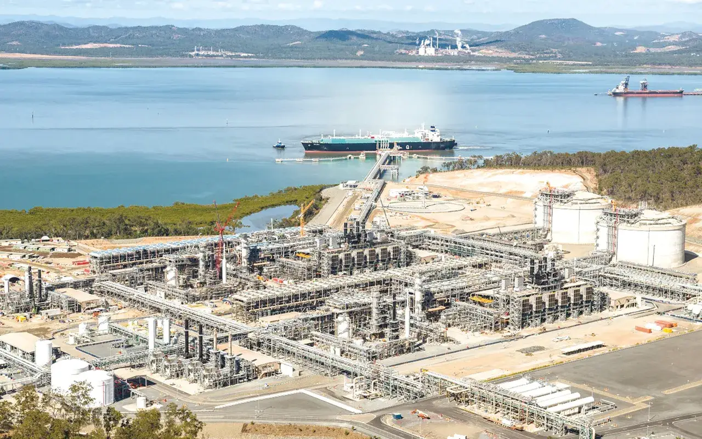

천연가스가 바다를 건너 우리 집에 닿기까지. 한국가스공사가 하는 일을 네 단계로 따라가 봅니다.
VALUE CHAIN
도입 · 생산 · 공급
스크롤하면 오른쪽 화면이 단계에 맞춰 바뀝니다.
01 · 도입
바다 건너 오는 천연가스
1986년 첫 LNG선 입항 이후, 인도네시아·말레이시아·카타르·호주 등 세계 곳곳에서 LNG를 들여옵니다.
02 · 생산
다섯 개의 생산기지
평택·인천·통영·삼척·제주 생산기지의 77기 저장탱크에서 LNG를 보관하고 다시 기체로 바꿉니다.
03 · 공급
5,140km 배관망
전국을 잇는 배관과 427개 공급관리소를 거쳐 발전소와 도시가스사, 그리고 우리 집까지 닿습니다.
04 · 미래
새로운 에너지로
수소와 친환경 에너지 기술을 준비하며 세계 천연가스 시장을 이끄는 기업으로 나아갑니다.



FROM SEA TO HOME
바다를 건너 우리 집까지
WEBTOON
웹툰으로 보는 한국가스공사
설립·생산·공급 이야기를 웹툰으로 쉽고 친근하게. 원본 사이트에서 이어서 볼 수 있습니다.